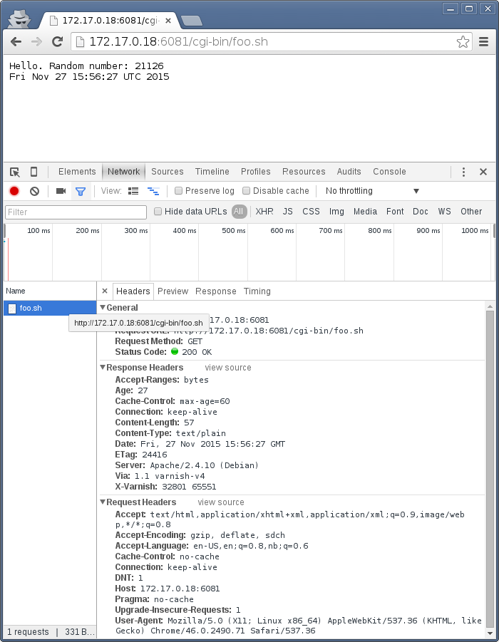
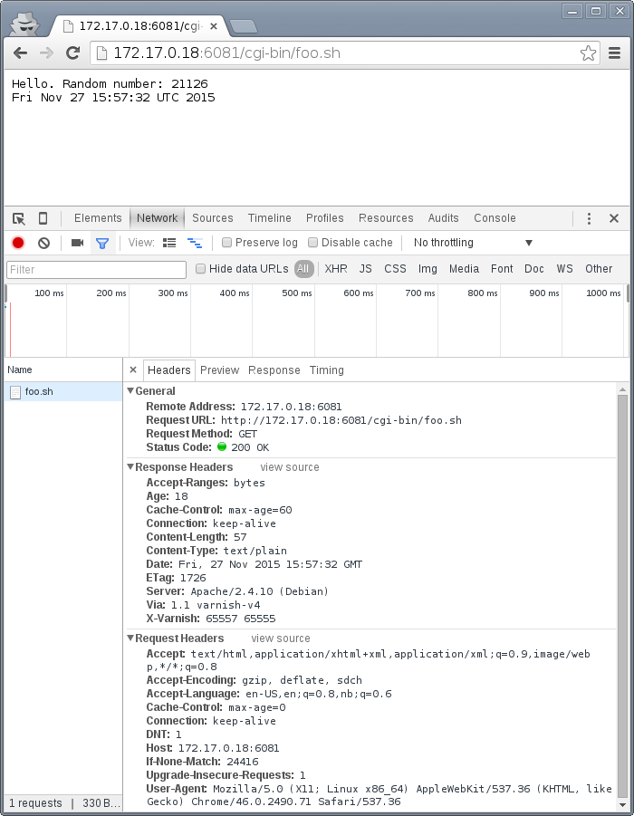

Working with HTTP caching
Before you dig into the inner workings of Varnish, it's important to make sure you have the tools you need and some background information on basic caching.
This chapter looks at how HTTP caching works on multiple points in the delivery chain, and how these mechanisms work together. Not every aspect of HTTP caching is covered, but those relevant to Varnish are covered in detail. Including several browser-related concerns.
There are a multitude of tools to chose from when you are working with Varnish. This chapter provides a few suggestions and a quick guide to each tool, but makes no claim on whether one tool is better than the other. The goal is to establish what sort of tasks your chosen tool needs to be able to accomplish.
Only the absolute minimum of actual Varnish configuration is covered - yet several mechanisms to control Varnish through backend responses are provided. Most of these mechanisms are well defined in the HTTP 1.1 standard, as defined in RFC2616.
Tools: The browser
A browser is an important tool. Most of todays web traffic is, unsurprisingly, through a web browser. Therefor, it is important to be able to dig deeper into how they work with regards to cache. Most browsers have a developer- or debug console, but we will focus on Chrome.
Both Firefox and Chrome will open the debug console if you hit <F12>. It's a good habit to test and experiment with more than one browser, and luckily these consoles are very similar. A strong case in favor of Chrome is Incognito Mode, activated through <Ctrl>+<Shift>+N. This is an advantage both because it removes old cookies and because most extensions are disabled. Most examples use Chrome to keep things consistent and simple, but could just as well have been performed on Firefox.
The importance of Incognito Mode can be easily demonstrated. The following is a test with a typical Chrome session:

Notice the multiple extensions that are active, one of them is inserting a bogus call to socialwidgets.css. The exact same test in Incognito Mode:

The extra request is gone. Regardless of browser choice, your test environment should be devoid of most extensions and let you easily get rid of all cookies.
You will also quickly learn that a refresh isn't always just a refresh. In both Firefox and Chrome, a refresh triggered by <F5> or <Ctrl>+r will be "cache aware". What does that mean?
Look closer on the screenshots above, specially the return code. The return code is a 304 Not Modified, not a 200 OK. The browser had the image in cache already and issued a conditional GET request. A closer inspection:

The browser sends Cache-Control: max-age=0 and an If-Modified-Since-header. The web server correctly responds with 304 Not Modified. We'll look closer at those, but for now, let's use a different type of refresh: <Shift>+<F5> in Chrome or <Shift>+<Ctrl>+r in Firefox:

The cache-related headers have changed somewhat, and the browser is no longer sending a If-Modified-Since header. The result is a 200 OK with response body instead of an empty 304 Not Modified.
These details are both the reason you need to test with a browser - because this is how they operate - and why a simpler tool is needed in addition to the browser.
Tools: The command line tool
The browser does a lot more than issue HTTP requests, specially with regards to cache. A good request synthesizer is a must to debug and experiment with HTTP and HTTP caching without stumbling over the browser. There are countless alternatives available.
Your requirement for a simple HTTP request synthesizer should be:
- Complete control over request headers and request method - even invalid input.
- Stateless behavior - no caching at all
- Show complete response headers.
Some suggestions for Windows users are curl in Powershell, Charles Web Debugging Proxy, the "Test and Rest Client" in PhpStorm, an "Adanced RST client" Chrome extension, or simply SSH'ing to a GNU/Linux VM and using one of the many tools available there. The list goes on, and so it could for Mac OS X and Linux too.
HTTPie is a small CLI tool which has the above properties. It's used throughout this book because it is a good tool, but also because it's easy to see what's going on without knowledge of the tool.
HTTPie is available on Linux, Mac OS X and Windows. On a Debian or Ubuntu system HTTPie can be installed with apt-get install httpie. For other platforms, see http://httpie.org. Testing httpie is simple:
$ http http://kly.no/misc/dummy.png HTTP/1.1 200 OK Accept-Ranges: bytes Age: 0 Connection: keep-alive Content-Length: 178 Content-Type: image/png Date: Wed, 25 Nov 2015 18:49:33 GMT Last-Modified: Wed, 02 Sep 2015 06:46:21 GMT Server: Really new stuff so people don't complain Via: 1.1 varnish-v4 X-Cache: MISS from access-gateway.hospitality.swisscom.com X-Varnish: 15849590 +-----------------------------------------+ | NOTE: binary data not shown in terminal | +-----------------------------------------+
In many situations, the actual data is often not that interesting, while a full set of request headers are very interesting. HTTPie can show you exactly what you want:
$ http -p Hh http://kly.no/misc/dummy.png GET /misc/dummy.png HTTP/1.1 Accept: */* Accept-Encoding: gzip, deflate Connection: keep-alive Host: kly.no User-Agent: HTTPie/0.8.0 HTTP/1.1 200 OK Accept-Ranges: bytes Age: 81 Connection: keep-alive Content-Length: 178 Content-Type: image/png Date: Wed, 25 Nov 2015 18:49:33 GMT Last-Modified: Wed, 02 Sep 2015 06:46:21 GMT Server: Really new stuff so people don't complain Via: 1.1 varnish-v4 X-Cache: HIT from access-gateway.hospitality.swisscom.com X-Varnish: 15849590
The -p option to http can be used to control output. Specifically:
- -p H will print request headers.
- -p h will print response headers.
- -p B will print request body.
- -p b will print response body.
These can combined. In the above example -p H and -p h combine to form -p Hh. See http --help and man http for details. Be aware that there has been some mismatch between actual command line arguments and what the documentation claims in the past, this depends on the version of HTTPie.
The example shows the original request headers and full response headers.
Faking a Host-header is frequently necessary to avoid changing DNS just to test a Varnish setup. A decent request synthesizer like HTTPie does this:
$ http -p Hh http://kly.no/ "Host: example.com" GET / HTTP/1.1 Accept: */* Accept-Encoding: gzip, deflate Connection: keep-alive Host: example.com User-Agent: HTTPie/0.8.0 HTTP/1.1 200 OK Accept-Ranges: bytes Age: 0 Connection: keep-alive Content-Encoding: gzip Content-Type: text/html Date: Wed, 25 Nov 2015 18:58:10 GMT Last-Modified: Tue, 24 Nov 2015 20:51:14 GMT Server: Really new stuff so people don't complain Transfer-Encoding: chunked Via: 1.1 varnish-v4 X-Cache: MISS from access-gateway.hospitality.swisscom.com X-Varnish: 15577233
Adding other headers is done the same way:
$ http -p Hh http://kly.no/ "If-Modified-Since: Tue, 24 Nov 2015 20:51:14 GMT" GET / HTTP/1.1 Accept: */* Accept-Encoding: gzip, deflate Connection: keep-alive Host: kly.no If-Modified-Since: Tue, 24 Nov 2015 20:51:14 GMT User-Agent: HTTPie/0.8.0 HTTP/1.1 304 Not Modified Age: 5 Connection: keep-alive Content-Encoding: gzip Content-Type: text/html Date: Wed, 25 Nov 2015 18:59:28 GMT Last-Modified: Tue, 24 Nov 2015 20:51:14 GMT Server: Really new stuff so people don't complain Via: 1.1 varnish-v4 X-Cache: MISS from access-gateway.hospitality.swisscom.com X-Varnish: 15880392 15904200
We just simulated what our browser did, and verified that it really was the If-Modified-Since header that made the difference earlier. To have multiple headers, just list them one after an other:
$ http -p Hh http://kly.no/ "Host: example.com" "User-Agent: foo" "X-demo: bar" GET / HTTP/1.1 Accept: */* Accept-Encoding: gzip, deflate Connection: keep-alive Host: example.com User-Agent: foo X-demo: bar HTTP/1.1 200 OK Accept-Ranges: bytes Age: 10 Connection: keep-alive Content-Encoding: gzip Content-Length: 24681 Content-Type: text/html Date: Wed, 25 Nov 2015 19:01:08 GMT Last-Modified: Tue, 24 Nov 2015 20:51:14 GMT Server: Really new stuff so people don't complain Via: 1.1 varnish-v4 X-Cache: MISS from access-gateway.hospitality.swisscom.com X-Varnish: 15759349 15809060
Tools: A web server
Regardless of what web server is picked as an example in this book, it's the wrong one. So the first on an alphabetical list was chosen: Apache.
Any decent web server will do what you need. What you want is a web server where you can easily modify response headers. If you are comfortable doing that with NodeJS or some other slightly more modern tool than Apache, then go ahead. If you really don't care and just want a test environment, then keep reading. To save some time, these examples are oriented around Debian and/or Ubuntu-systems, but largely apply to any modern GNU/Linux distribution (and other UNIX-like systems).
Note that commands that start with # are executed as root, while commands starting with $ can be run as a regular user. This means you either have to login as root directly, through su - or sudo -i, or prefix the command with sudo if you've set up sudo on your system.
The first step is getting it installed and configured:
# apt-get install apache2 (...) # a2enmod cgi # cd /etc/apache2 # sed -i 's/80/8080/g' ports.conf sites-enabled/000-default.conf # service apache2 restart
This installs Apache httpd, enables the CGI module, changes the listening port from port 80 to 8080, then restarts the web server. The listening port is changed because eventually Varnish will take up residence on port 80.
You can verify that it works through two means:
# netstat -nlpt Active Internet connections (only servers) Proto Recv-Q Send-Q Local Address Foreign Address State PID/Program name tcp6 0 0 :::8080 :::* LISTEN 1101/apache2 # http -p Hh http://localhost:8080/ GET / HTTP/1.1 Accept: */* Accept-Encoding: gzip, deflate Connection: keep-alive Host: localhost:8080 User-Agent: HTTPie/0.8.0 HTTP/1.1 200 OK Accept-Ranges: bytes Connection: Keep-Alive Content-Encoding: gzip Content-Length: 3078 Content-Type: text/html Date: Wed, 25 Nov 2015 20:23:09 GMT ETag: "2b60-525632b42b90d-gzip" Keep-Alive: timeout=5, max=100 Last-Modified: Wed, 25 Nov 2015 20:19:01 GMT Server: Apache/2.4.10 (Debian) Vary: Accept-Encoding
netstat reveals that apache2 is listening on port 8080. The second command issues an actual request. Both are useful to ensure the correct service is answering.
To provide a platform for experimenting with response header, it's time to drop in a CGI script:
# cd /usr/lib/cgi-bin
# cat > foo.sh <<_EOF_
#!/bin/bash
echo "Content-type: text/plain"
echo
echo "Hello. Random number: ${RANDOM}"
date
_EOF_
# chmod a+x foo.sh
# ./foo.sh
Content-type: text/plain
Hello. Random number: 12111
Wed Nov 25 20:26:59 UTC 2015
You may want to use an editor, like nano, vim or emacs instead of using cat. To clarify, the exact content of foo.sh is:
#!/bin/bash
echo "Content-type: text/plain"
echo
echo "Hello. Random number: ${RANDOM}"
date
We then change permissions for foo.sh, making it executable by all users, then verify that it does what it's supposed to. If everything is set up correctly, scripts under /usr/lib/cgi-bin are accessible through http://localhost:8080/cgi-bin/:
# http -p Hhb http://localhost:8080/cgi-bin/foo.sh GET /cgi-bin/foo.sh HTTP/1.1 Accept: */* Accept-Encoding: gzip, deflate Connection: keep-alive Host: localhost:8080 User-Agent: HTTPie/0.8.0 HTTP/1.1 200 OK Connection: Keep-Alive Content-Length: 57 Content-Type: text/plain Date: Wed, 25 Nov 2015 20:31:00 GMT Keep-Alive: timeout=5, max=100 Server: Apache/2.4.10 (Debian) Hello. Random number: 12126 Wed Nov 25 20:31:00 UTC 2015
If you've been able to reproduce the above example, you're ready to start start testing and experimenting.
Tools: Varnish
We need an intermediary cache, and what better example than Varnish? We'll refrain from configuring Varnish beyond the defaults for now, though.
For now, let's just install Varnish. This assumes you're using a Debian or Ubuntu-system and that you have a web server listening on port 8080, as Varnish uses a web server on port 8080 by default:
# apt-get install varnish # service varnish start # http -p Hhb http://localhost:6081/cgi-bin/foo.sh GET /cgi-bin/foo.sh HTTP/1.1 Accept: */* Accept-Encoding: gzip, deflate Connection: keep-alive Host: localhost:6081 User-Agent: HTTPie/0.8.0 HTTP/1.1 200 OK Accept-Ranges: bytes Age: 0 Connection: keep-alive Content-Length: 57 Content-Type: text/plain Date: Wed, 25 Nov 2015 20:38:09 GMT Server: Apache/2.4.10 (Debian) Via: 1.1 varnish-v4 X-Varnish: 5 Hello. Random number: 26 Wed Nov 25 20:38:09 UTC 2015
As you can see from the above example, a typical Varnish installation listens to port 6081 by default, and uses 127.0.0.1:8080 as the backend web server. If the above example doesn't work, you can change the listening port of Varnish by altering the -a argument in /etc/default/varnish and issuing service varnish restart, and the backend web server can be changed in /etc/varnish/default.vcl, then issue a restart with service varnish restart. We'll cover both of these files in detail in later chapters.
Conditional GET requests
In the tool-examples earlier we saw real examples of a conditional GET requests. In many ways, they are quite simple mechanisms to allow a HTTP client - typically a browser - to verify that they have the most up-to-date version of the HTTP object. There are two different types of conditional GET requests: If-Modified-Since and If-None-Match.
If a server sends a Last-Modified-header, the client can issue a If-Modified-Since header on later requests for the same content, indicating that the server only needs to transmit the response body if it's been updated.
Some times it isn't trivial to know the modification time, but you might be able to uniquely identify the content anyway. For that matter, the content might have been changed back to a previous state. This is where the entity tag, or ETag response header is useful.
An Etag header can be used to provide an arbitrary ID to an HTTP response, and the client can then re-use that in a If-None-Match request header.
Modifying /usr/lib/cgi-bin/foo.sh, we can make it provide a static ETag header:
#!/bin/bash
echo "Content-type: text/plain"
echo "Etag: testofetagnumber1"
echo
echo "Hello. Random number: ${RANDOM}"
date
Let's see what happens when we talk directly to Apache:
# http http://localhost:8080/cgi-bin/foo.sh HTTP/1.1 200 OK Connection: Keep-Alive Content-Length: 57 Content-Type: text/plain Date: Wed, 25 Nov 2015 20:43:25 GMT Etag: testofetagnumber1 Keep-Alive: timeout=5, max=100 Server: Apache/2.4.10 (Debian) Hello. Random number: 51126 Wed Nov 25 20:43:25 UTC 2015 # http http://localhost:8080/cgi-bin/foo.sh HTTP/1.1 200 OK Connection: Keep-Alive Content-Length: 57 Content-Type: text/plain Date: Wed, 25 Nov 2015 20:43:28 GMT Etag: testofetagnumber1 Keep-Alive: timeout=5, max=100 Server: Apache/2.4.10 (Debian) Hello. Random number: 12112 Wed Nov 25 20:43:28 UTC 2015
Two successive requests yielded updated content, but with the same Etag. Now let's see how Varnish handles this:
# http http://localhost:6081/cgi-bin/foo.sh HTTP/1.1 200 OK Accept-Ranges: bytes Age: 0 Connection: keep-alive Content-Length: 57 Content-Type: text/plain Date: Wed, 25 Nov 2015 20:44:53 GMT Etag: testofetagnumber1 Server: Apache/2.4.10 (Debian) Via: 1.1 varnish-v4 X-Varnish: 32770 Hello. Random number: 5213 Wed Nov 25 20:44:53 UTC 2015 # http http://localhost:6081/cgi-bin/foo.sh HTTP/1.1 200 OK Accept-Ranges: bytes Age: 2 Connection: keep-alive Content-Length: 57 Content-Type: text/plain Date: Wed, 25 Nov 2015 20:44:53 GMT Etag: testofetagnumber1 Server: Apache/2.4.10 (Debian) Via: 1.1 varnish-v4 X-Varnish: 32773 32771 Hello. Random number: 5213 Wed Nov 25 20:44:53 UTC 2015
It's pretty easy to see the difference in the output. However, there are two things happening here of interest. First, Etag doesn't matter for this test because we never send If-None-Match! So our http-command gets a 200 OK, not the 304 Not Modified that we were looking for. Let's try that again:
# http http://localhost:6081/cgi-bin/foo.sh "If-None-Match: testofetagnumber1" HTTP/1.1 304 Not Modified Age: 0 Connection: keep-alive Content-Type: text/plain Date: Wed, 25 Nov 2015 20:48:52 GMT Etag: testofetagnumber1 Server: Apache/2.4.10 (Debian) Via: 1.1 varnish-v4 X-Varnish: 8
Now we see Etag and If-None-Match at work. Also note the absence of a body: we just saved bandwidth.
Let's try to change our If-None-Match header a bit:
# http http://localhost:6081/cgi-bin/foo.sh "If-None-Match: testofetagnumber2" HTTP/1.1 200 OK Accept-Ranges: bytes Age: 0 Connection: keep-alive Content-Length: 57 Content-Type: text/plain Date: Wed, 25 Nov 2015 20:51:10 GMT Etag: testofetagnumber1 Server: Apache/2.4.10 (Debian) Via: 1.1 varnish-v4 X-Varnish: 11 Hello. Random number: 12942 Wed Nov 25 20:51:10 UTC 2015
Content!
To summarize:
| Server | Client | Server |
|---|---|---|
| Last-Modified | If-Modified-Since | 200 OK with full response body, or 304 Not Modified with no response body. |
| ETag | If-None-Match |
Warning
The examples above also demonstrates that supplying static Etag headers or bogus Last-Modified headers can have unexpected side effects. foo.sh provides new content every time. Talking directly to the web server resulted in the desired behavior of the client getting the updated content, but only because the web server ignored the conditional part of the request.
The danger is not necessarily Varnish, but proxy servers outside of the control of the web site, sitting between the client and the web server. Even if a web server ignores If-None-Match and If-Modified-Since headers, there is no guarantee that other proxies do! Make sure to only provide Etag and Last-Modified-headers that are correct, or don't provide them at all.
Cache control, age and grace
An HTTP object has an age. This is how long it is since the object was fetched or validated from the origin source. In most cases, an object starts acquiring age once it leaves a web server.
Age is measured in seconds. The HTTP response header Age is used to forward the information regarding age to HTTP clients. You can specify maximum age allowed both from a client and server. The most interesting aspect of this is the HTTP header Cache-Control. This is both a response- and request-header, which means that both clients and servers can emit this header.
The Age header has a single value: the age of the object measured in seconds. The Cache-Control header, on the other hand, has a multitude of variables and options. We'll begin with the simplest: max-age=. This is a variable that can be used both in a request-header and response-header, but is most useful in the response header. Most web servers and many intermediary caches (including Varnish), ignores a max-age field received in a HTTP request-header.
Setting max-age=0 effectively disables caching, assuming the cache obeys:
# http http://localhost:6081/cgi-bin/foo.sh HTTP/1.1 200 OK Accept-Ranges: bytes Age: 0 Cache-Control: max-age=0 Connection: keep-alive Content-Length: 57 Content-Type: text/plain Date: Fri, 27 Nov 2015 15:41:53 GMT Server: Apache/2.4.10 (Debian) Via: 1.1 varnish-v4 X-Varnish: 32776 Hello. Random number: 19972 Fri Nov 27 15:41:53 UTC 2015 # http http://localhost:6081/cgi-bin/foo.sh HTTP/1.1 200 OK Accept-Ranges: bytes Age: 0 Cache-Control: max-age=0 Connection: keep-alive Content-Length: 57 Content-Type: text/plain Date: Fri, 27 Nov 2015 15:41:57 GMT Server: Apache/2.4.10 (Debian) Via: 1.1 varnish-v4 X-Varnish: 32779 Hello. Random number: 92124 Fri Nov 27 15:41:57 UTC 2015
This example issues two requests against a modified http://localhost:6081/cgi-bin/foo.sh. The modified version has set max-age=0 to tell Varnish - and browsers - not to cache the content at all. A similar example can be used for max-age=10:
# http http://localhost:6081/cgi-bin/foo.sh HTTP/1.1 200 OK Accept-Ranges: bytes Age: 0 Cache-Control: max-age=10 Connection: keep-alive Content-Length: 57 Content-Type: text/plain Date: Fri, 27 Nov 2015 15:44:32 GMT Server: Apache/2.4.10 (Debian) Via: 1.1 varnish-v4 X-Varnish: 14 Hello. Random number: 19982 Fri Nov 27 15:44:32 UTC 2015 # http http://localhost:6081/cgi-bin/foo.sh HTTP/1.1 200 OK Accept-Ranges: bytes Age: 8 Cache-Control: max-age=10 Connection: keep-alive Content-Length: 57 Content-Type: text/plain Date: Fri, 27 Nov 2015 15:44:32 GMT Server: Apache/2.4.10 (Debian) Via: 1.1 varnish-v4 X-Varnish: 32782 15 Hello. Random number: 19982 Fri Nov 27 15:44:32 UTC 2015 # http http://localhost:6081/cgi-bin/foo.sh HTTP/1.1 200 OK Accept-Ranges: bytes Age: 12 Cache-Control: max-age=10 Connection: keep-alive Content-Length: 57 Content-Type: text/plain Date: Fri, 27 Nov 2015 15:44:32 GMT Server: Apache/2.4.10 (Debian) Via: 1.1 varnish-v4 X-Varnish: 19 15 Hello. Random number: 19982 Fri Nov 27 15:44:32 UTC 2015 # http http://localhost:6081/cgi-bin/foo.sh HTTP/1.1 200 OK Accept-Ranges: bytes Age: 2 Cache-Control: max-age=10 Connection: keep-alive Content-Length: 57 Content-Type: text/plain Date: Fri, 27 Nov 2015 15:44:44 GMT Server: Apache/2.4.10 (Debian) Via: 1.1 varnish-v4 X-Varnish: 65538 20 Hello. Random number: 9126 Fri Nov 27 15:44:44 UTC 2015
This example demonstrates several things:
- Varnish emits an Age header, telling you how old the object is.
- Varnish now caches.
- Varnish delivers a 12-second old object, despite max-age=10!
- Varnish then deliver a 2 second old object? Despite no other request in-between.
What this example is showing, is Varnish's default grace mode. The simple explanation is that Varnish keeps an object a little longer (10 seconds by default) than the regular cache duration. If the object is requested during this period, the cached variant of the object is sent to the client, while Varnish issues a request to the backend server in parallel. This is also called stale while revalidate. This happens even with zero configuration for Varnish, and is covered detailed in later chapters. For now, it's good to just get used to issuing an extra request to Varnish after the expiry time to see the update take place.
Let's do an other example of this, using a browser, and 60 seconds of max age and an ETag header set to something random so our browser can do conditional GET requests:
On the first request we get a 27 second old object.

The second request is a conditional GET request because we had it in cache. Note that our browser has already exceeded the max-age, but still made a conditional GET request. A cache (browser or otherwise) may keep an object longer than the suggested max-age, as long as it verifies the content before using it. The result is the same object, now with an age of 65 seconds.
The third request takes place just 18 seconds later. This is not a conditional GET request, most likely because our browser correctly saw that the Age of the previous object was 65, while max-age=60 instructed the browser to only keep the object until it reached an age of 60 - a time which had already past. Our browser thus did not keep the object at all this time.
Similarly, we can modify foo.sh to emit max-age=3600 and Age: 3590, pretending to be a cache. Speaking directly to Apache:
# http http://localhost:8080/cgi-bin/foo.sh HTTP/1.1 200 OK Age: 3590 Cache-Control: max-age=3600 Connection: Keep-Alive Content-Length: 57 Content-Type: text/plain Date: Fri, 27 Nov 2015 16:07:36 GMT ETag: 11235 Keep-Alive: timeout=5, max=100 Server: Apache/2.4.10 (Debian) Hello. Random number: 54251 Fri Nov 27 16:07:36 UTC 2015 # http http://localhost:8080/cgi-bin/foo.sh HTTP/1.1 200 OK Age: 3590 Cache-Control: max-age=3600 Connection: Keep-Alive Content-Length: 57 Content-Type: text/plain Date: Fri, 27 Nov 2015 16:07:54 GMT ETag: 12583 Keep-Alive: timeout=5, max=100 Server: Apache/2.4.10 (Debian) Hello. Random number: 68323 Fri Nov 27 16:07:54 UTC 2015
Nothing too exciting, but the requests returns what we should have learned to expect by now.
Let's try three requests through Varnish:
# http http://localhost:6081/cgi-bin/foo.sh HTTP/1.1 200 OK Accept-Ranges: bytes Age: 3590 Cache-Control: max-age=3600 Connection: keep-alive Content-Length: 57 Content-Type: text/plain Date: Fri, 27 Nov 2015 16:08:50 GMT ETag: 9315 Server: Apache/2.4.10 (Debian) Via: 1.1 varnish-v4 X-Varnish: 65559 Hello. Random number: 22609 Fri Nov 27 16:08:50 UTC 2015
The first request is almost identical to the one we issued to Apache, except a few added headers.
15 seconds later, we issue the same command again:
# http http://localhost:6081/cgi-bin/foo.sh HTTP/1.1 200 OK Accept-Ranges: bytes Age: 3605 Cache-Control: max-age=3600 Connection: keep-alive Content-Length: 57 Content-Type: text/plain Date: Fri, 27 Nov 2015 16:08:50 GMT ETag: 9315 Server: Apache/2.4.10 (Debian) Via: 1.1 varnish-v4 X-Varnish: 32803 65560 Hello. Random number: 22609 Fri Nov 27 16:08:50 UTC 2015
Varnish replies with a version from grace, and has issued an update to Apache in the background. Note that the Age header is now increased, and is clearly beyond the age limit of 3600.
4 seconds later, the third request:
# http http://localhost:6081/cgi-bin/foo.sh HTTP/1.1 200 OK Accept-Ranges: bytes Age: 3594 Cache-Control: max-age=3600 Connection: keep-alive Content-Length: 57 Content-Type: text/plain Date: Fri, 27 Nov 2015 16:09:05 GMT ETag: 24072 Server: Apache/2.4.10 (Debian) Via: 1.1 varnish-v4 X-Varnish: 65564 32804 Hello. Random number: 76434 Fri Nov 27 16:09:05 UTC 2015
Updated content!
The lessons to pick up from this is:
- Age is not just an informative header. It is used by intermediary caches and by browser caches.
- max-age is relative to Age and not to when the request was made.
- You can have multiple tiers of caches, and max-age=x will be correct for the end user if all intermediary caches correctly obey it and adds to Age.
The Cache-Control header
The Cache-Control header has a multitude of possible values, and can be supplied as both a request-header and response-header. Varnish ignores any Cache-Control header received from a client - other caches might obey them.
It is defined in RFC2616, 14.9. As Varnish ignores all Cache-Control headers in a client request, we will focus on the parts relevant to a HTTP response, here's an excerpt from RFC2616:
Cache-Control = "Cache-Control" ":" 1#cache-directive
cache-directive = cache-request-directive
| cache-response-directive
(...)
cache-response-directive =
"public" ; Section 14.9.1
| "private" [ "=" <"> 1#field-name <"> ] ; Section 14.9.1
| "no-cache" [ "=" <"> 1#field-name <"> ]; Section 14.9.1
| "no-store" ; Section 14.9.2
| "no-transform" ; Section 14.9.5
| "must-revalidate" ; Section 14.9.4
| "proxy-revalidate" ; Section 14.9.4
| "max-age" "=" delta-seconds ; Section 14.9.3
| "s-maxage" "=" delta-seconds ; Section 14.9.3
| cache-extension ; Section 14.9.6
cache-extension = token [ "=" ( token | quoted-string ) ]
Among the above directives, Varnish only obeys s-maxage and max-age by default. It's worth looking closer specially at must-revalidate. This allows a client to cache the content, but requires it to send a conditional GET request before actually using the content.
s-maxage is of special interest to Varnish users. It instructs intermediate caches, but not clients (e.g.: browsers). Varnish will pick the value of s-maxage over max-age, which makes it possible for a web server to emit a Cache-Control header that gives different instructions to browsers and Varnish:
# http http://localhost:6081/cgi-bin/foo.sh HTTP/1.1 200 OK Accept-Ranges: bytes Age: 0 Cache-Control: s-maxage=3600,max-age=5 Connection: keep-alive Content-Type: text/plain Date: Fri, 27 Nov 2015 23:21:47 GMT Server: Apache/2.4.10 (Debian) Transfer-Encoding: chunked Via: 1.1 varnish-v4 X-Varnish: 2 Hello. Random number: 7684 Fri Nov 27 23:21:47 UTC 2015 # http http://localhost:6081/cgi-bin/foo.sh HTTP/1.1 200 OK Accept-Ranges: bytes Age: 8 Cache-Control: s-maxage=3600,max-age=5 Connection: keep-alive Content-Length: 57 Content-Type: text/plain Date: Fri, 27 Nov 2015 23:21:47 GMT Server: Apache/2.4.10 (Debian) Via: 1.1 varnish-v4 X-Varnish: 5 3 Hello. Random number: 7684 Fri Nov 27 23:21:47 UTC 2015 # http http://localhost:6081/cgi-bin/foo.sh HTTP/1.1 200 OK Accept-Ranges: bytes Age: 16 Cache-Control: s-maxage=3600,max-age=5 Connection: keep-alive Content-Length: 57 Content-Type: text/plain Date: Fri, 27 Nov 2015 23:21:47 GMT Server: Apache/2.4.10 (Debian) Via: 1.1 varnish-v4 X-Varnish: 7 3 Hello. Random number: 7684 Fri Nov 27 23:21:47 UTC 2015
The first request populates the cache, the second returns a cache hit after 8 seconds, while the third confirms that no background fetch has caused an update by returning the same object a third time.
Two important things to note here:
- The Age header is accurately reported. This effectively disables client-side caching after Age has reached 5 seconds.
- There could be other intermediate caches that would also use s-maxage.
The solution to both these issues is the same: Remove or reset the Age-header and remove or reset the s-maxage-part of the Cache-Control header. Varnish does not do this by default, but we will do both in later chapters. For now, just know that these are challenges.
stale-while-revalidate
In addition to RFC2616, there's also the more recent RFC5861 defines two additional variables for Cache-Control:
stale-while-revalidate = "stale-while-revalidate" "=" delta-seconds
and:
stale-if-error = "stale-if-error" "=" delta-seconds
These two variables map very well to Varnish' grace mechanics, which existed a few years before RFC5861 came about.
Varnish 4.1 implements stale-while-revalidate for the first time, but not stale-if-error. Varnish has a default stale-while-revalidate value of 10 seconds. Earlier examples ran into this: You could see responses that were a few seconds older than max-age, while a request to revalidate the response was happening in the background.
A demo of default grace, pay attention to the Age header:
# http -p h http://localhost:6081/cgi-bin/foo.sh HTTP/1.1 200 OK Accept-Ranges: bytes Age: 0 Cache-Control: max-age=5 Connection: keep-alive Content-Length: 56 Content-Type: text/plain Date: Sun, 29 Nov 2015 15:10:56 GMT Server: Apache/2.4.10 (Debian) Via: 1.1 varnish-v4 X-Varnish: 2 # http -p h http://localhost:6081/cgi-bin/foo.sh HTTP/1.1 200 OK Accept-Ranges: bytes Age: 4 Cache-Control: max-age=5 Connection: keep-alive Content-Length: 56 Content-Type: text/plain Date: Sun, 29 Nov 2015 15:10:56 GMT Server: Apache/2.4.10 (Debian) Via: 1.1 varnish-v4 X-Varnish: 5 3 # http -p h http://localhost:6081/cgi-bin/foo.sh HTTP/1.1 200 OK Accept-Ranges: bytes Age: 8 Cache-Control: max-age=5 Connection: keep-alive Content-Length: 56 Content-Type: text/plain Date: Sun, 29 Nov 2015 15:10:56 GMT Server: Apache/2.4.10 (Debian) Via: 1.1 varnish-v4 X-Varnish: 32770 3 # http -p h http://localhost:6081/cgi-bin/foo.sh HTTP/1.1 200 OK Accept-Ranges: bytes Age: 4 Cache-Control: max-age=5 Connection: keep-alive Content-Length: 56 Content-Type: text/plain Date: Sun, 29 Nov 2015 15:11:03 GMT Server: Apache/2.4.10 (Debian) Via: 1.1 varnish-v4 X-Varnish: 65538 32771
On the third request, Varnish is returning an object that is 8 seconds old, despite the max-age=5 second. When this request was received, Varnish immediately fired off a request to the web server to revalidate the object, but returned the result from cache. This is also demonstrated by the fourth request, where Age is already 4. The fourth request gets the result from the backend-request started when the third request was received. So:
- Request: Nothing in cache. Varnish requests content from backend, waits, and responds with that result.
- Request: Standard cache hit.
- Request: Varnish sees that the object in cache is stale, initiates a request to a backend server, but does NOT wait for the response. Instead, the result from cache is returned.
- Request: By now, the backend-request initiated from the third request is complete. This is thus a standard cache hit.
This behavior means that slow backends will not affect client requests if content is cached.
If this behavior is unwanted, you can disable grace by setting stale-while-revalidate=0:
# http -p h http://localhost:6081/cgi-bin/foo.sh HTTP/1.1 200 OK Accept-Ranges: bytes Age: 0 Cache-Control: max-age=5, stale-while-revalidate=0 Connection: keep-alive Content-Length: 57 Content-Type: text/plain Date: Thu, 03 Dec 2015 12:50:36 GMT Server: Apache/2.4.10 (Debian) Via: 1.1 varnish-v4 X-Varnish: 12 # http -p h http://localhost:6081/cgi-bin/foo.sh HTTP/1.1 200 OK Accept-Ranges: bytes Age: 3 Cache-Control: max-age=5, stale-while-revalidate=0 Connection: keep-alive Content-Length: 57 Content-Type: text/plain Date: Thu, 03 Dec 2015 12:50:36 GMT Server: Apache/2.4.10 (Debian) Via: 1.1 varnish-v4 X-Varnish: 32773 13 # http -p h http://localhost:6081/cgi-bin/foo.sh HTTP/1.1 200 OK Accept-Ranges: bytes Age: 0 Cache-Control: max-age=5, stale-while-revalidate=0 Connection: keep-alive Content-Length: 57 Content-Type: text/plain Date: Thu, 03 Dec 2015 12:50:42 GMT Server: Apache/2.4.10 (Debian) Via: 1.1 varnish-v4 X-Varnish: 32775 # http -p h http://localhost:6081/cgi-bin/foo.sh HTTP/1.1 200 OK Accept-Ranges: bytes Age: 1 Cache-Control: max-age=5, stale-while-revalidate=0 Connection: keep-alive Content-Length: 57 Content-Type: text/plain Date: Thu, 03 Dec 2015 12:50:42 GMT Server: Apache/2.4.10 (Debian) Via: 1.1 varnish-v4 X-Varnish: 15 32776
This was added in Varnish 4.1.0. We can now see that no background fetching was done at all, and no stale objects were delivered. In other words:
- Request: Nothing in cache. Varnish requests content from backend, waits, and responds with that result.
- Request: Standard cache hit.
- Request: Nothing in cache. Varnish fetches content form backend, waits and responds with that result.
- Request: Standard cache hit.
Vary
The Vary-header is exclusively meant for intermediate caches, such as Varnish. It is a comma-separated list of references to request headers that will cause the web server to produce a different variant of the same content. An example is needed:
# http -p Hhb http://localhost:6081/cgi-bin/foo.sh "X-demo: foo" GET /cgi-bin/foo.sh HTTP/1.1 Accept: */* Accept-Encoding: gzip, deflate Connection: keep-alive Host: localhost:6081 User-Agent: HTTPie/0.8.0 X-demo: foo HTTP/1.1 200 OK Accept-Ranges: bytes Age: 6 Cache-Control: s-maxage=3600 Connection: keep-alive Content-Length: 57 Content-Type: text/plain Date: Fri, 27 Nov 2015 23:56:47 GMT Server: Apache/2.4.10 (Debian) Vary: X-demo Via: 1.1 varnish-v4 X-Varnish: 12 32771 Hello. Random number: 21126 Fri Nov 27 23:56:47 UTC 2015 # http -p Hhb http://localhost:6081/cgi-bin/foo.sh "X-demo: bar" GET /cgi-bin/foo.sh HTTP/1.1 Accept: */* Accept-Encoding: gzip, deflate Connection: keep-alive Host: localhost:6081 User-Agent: HTTPie/0.8.0 X-demo: bar HTTP/1.1 200 OK Accept-Ranges: bytes Age: 0 Cache-Control: s-maxage=3600 Connection: keep-alive Content-Length: 57 Content-Type: text/plain Date: Fri, 27 Nov 2015 23:56:57 GMT Server: Apache/2.4.10 (Debian) Vary: X-demo Via: 1.1 varnish-v4 X-Varnish: 32773 Hello. Random number: 126 Fri Nov 27 23:56:57 UTC 2015 # http -p Hhb http://localhost:6081/cgi-bin/foo.sh "X-demo: foo" GET /cgi-bin/foo.sh HTTP/1.1 Accept: */* Accept-Encoding: gzip, deflate Connection: keep-alive Host: localhost:6081 User-Agent: HTTPie/0.8.0 X-demo: foo HTTP/1.1 200 OK Accept-Ranges: bytes Age: 15 Cache-Control: s-maxage=3600 Connection: keep-alive Content-Length: 57 Content-Type: text/plain Date: Fri, 27 Nov 2015 23:56:47 GMT Server: Apache/2.4.10 (Debian) Vary: X-demo Via: 1.1 varnish-v4 X-Varnish: 14 32771 Hello. Random number: 21126 Fri Nov 27 23:56:47 UTC 2015 # http -p Hhb http://localhost:6081/cgi-bin/foo.sh "X-demo: bar" GET /cgi-bin/foo.sh HTTP/1.1 Accept: */* Accept-Encoding: gzip, deflate Connection: keep-alive Host: localhost:6081 User-Agent: HTTPie/0.8.0 X-demo: bar HTTP/1.1 200 OK Accept-Ranges: bytes Age: 8 Cache-Control: s-maxage=3600 Connection: keep-alive Content-Length: 57 Content-Type: text/plain Date: Fri, 27 Nov 2015 23:56:57 GMT Server: Apache/2.4.10 (Debian) Vary: X-demo Via: 1.1 varnish-v4 X-Varnish: 32776 32774 Hello. Random number: 126 Fri Nov 27 23:56:57 UTC 2015
These four requests demonstrates that two objects are entered into the cache for the same URL, accessible by modifying the arbitrarily chosen X-demo request header - which is not a real header.
The most important use-case for Vary is to support content encoding such as gzip. In earlier versions of Varnish, the web server needed to do the compression and Varnish would store the compressed content and (assuming a client asked for it), the uncompressed content. This was supported through the Vary header, which the server would set to Vary: Accept-Encoding. Today, Varnish understands gzip and this isn't needed. There are two more examples of Vary-usage.
Mobile devices are often served different variants of the same contents, so called mobile-friendly pages. To make sure intermediate caches supports this, Varnish must emit a Vary: User-Agent string, suggesting that for each different User-Agent header sent, a unique variant of the cache must be made.
The second such header is the nefarious Cookie header. Whenever a page is rendered differently based on a cookie, the web server should send Vary: Cookie. However, hardly anyone do this in the real world, which has resulted in cookies being treated differently. Varnish does not cache any content if it's requested with a cookie by default, nor does it cache any response with a Set-Cookie-header. This clearly needs to be overridden, and will be covered in detail in later chapters.
The biggest problem with the Vary-header is the lack of semantic details. The Vary header simply states that any variation in the request header, however small, mandates a new object in the cache. This causes numerous headaches. Here are some examples:
- Accept-Enoding: gzip,deflate and Accept-Encoding: deflate,gzip will result in two different variants.
- Vary: User-Agent will cause a tremendous amount of variants, since the level of detail in modern User-Agent headers is extreme.
- It's impossible to say that only THAT cookie will matter, not the others.
Many of these things can be remedied or at least worked around in Varnish. All of it will be covered in detail in separate chapters.
On a last note, Varnish has a special case were it refuse to cache any content with a response header of Vary: *.
Request methods
Only the GET request method is cached. However, Varnish will re-write a HEAD request to a GET request, cache the result and strip the response body before answering the client. A HEAD request is supposed to be exactl the same as a GET request, with the response body stripped, so this makes sense. To see this effect, issue a HEAD request first directly to Apache:
# http -p Hhb HEAD http://localhost:8080/cgi-bin/foo.sh HEAD /cgi-bin/foo.sh HTTP/1.1 Accept: */* Accept-Encoding: gzip, deflate Connection: keep-alive Host: localhost:8080 User-Agent: HTTPie/0.8.0 HTTP/1.1 200 OK Connection: Keep-Alive Content-Length: 29 Content-Type: text/plain Date: Sat, 28 Nov 2015 00:30:33 GMT Keep-Alive: timeout=5, max=100 Server: Apache/2.4.10 (Debian) # tail -n1 /var/log/apache2/access.log ::1 - - [28/Nov/2015:00:30:33 +0000] "HEAD /cgi-bin/foo.sh HTTP/1.1" 200 190 "-" "HTTPie/0.8.0"
The access log shows a HEAD request. Issuing the same request to Varnish:
# http -p Hhb HEAD http://localhost:6081/cgi-bin/foo.sh HEAD /cgi-bin/foo.sh HTTP/1.1 Accept: */* Accept-Encoding: gzip, deflate Connection: keep-alive Host: localhost:6081 User-Agent: HTTPie/0.8.0 HTTP/1.1 200 OK Age: 0 Connection: keep-alive Content-Length: 29 Content-Type: text/plain Date: Sat, 28 Nov 2015 00:32:05 GMT Server: Apache/2.4.10 (Debian) Via: 1.1 varnish-v4 X-Varnish: 2 # tail -n1 /var/log/apache2/access.log 127.0.0.1 - - [28/Nov/2015:00:32:05 +0000] "GET /cgi-bin/foo.sh HTTP/1.1" 200 163 "-" "HTTPie/0.8.0"
The client sees the same result, but the web server has logged a GET request. Please note that HEAD-requests include a Content-Lenght as if a GET-request was issued. It is only the response body itself that is absent.
Cached status codes
Only a subset of response odes allow cacheing, even if an s-maxage or similar is provided. Quoting directly from Varnish source code, specifically bin/varnishd/cache/cache_rfc2616.c, the list is:
case 200: /* OK */ case 203: /* Non-Authoritative Information */ case 204: /* No Content */ case 300: /* Multiple Choices */ case 301: /* Moved Permanently */ case 304: /* Not Modified - handled like 200 */ case 404: /* Not Found */ case 410: /* Gone */ case 414: /* Request-URI Too Large */
That means that if you provide s-maxage on a 500 Internal Server Error, Varnish will still not cache it by default. Varnish will cache the above status codes even without any cache control headers. The default cache duration is 2 minutes.
In addition to the above, there are two more status codes worth mentioning:
case 302: /* Moved Temporarily */
case 307: /* Temporary Redirect */
/*
* https://tools.ietf.org/html/rfc7231#section-6.1
*
* Do not apply the default ttl, only set a ttl if Cache-Control
* or Expires are present. Uncacheable otherwise.
*/
expp->ttl = -1.;
Responses with status codes 302 Moved Temporarily or 307 Temporary Redirect are only cached if Cache-Control or Expires explicitly allows it, but not cached by default.
In other words:
- max-age=10 + 500 Internal Server Error: Not cached
- max-age=10 + 302 Moved Temporarily: Cached
- No Cache-Control + 302 Moved Temporarily: Not cached
- No Cache-Control + 404 Not Found: Cached
Cookies and authorization
Requests with a cookie-header or HTTP basic authorization header are tricky at best to cache. Varnish takes a "better safe than sorry" approach, and does not cache responses to requests with either a Cookie-header, Authorization-header by default. Responses with Set-Cookie are not cached.
Because cookies are so common, this will generally mean that any modern site is not cached by default. Fortunately, Varnish has the means to override that default. We will investigate that in detail in later chapters.
Summary
There are a few other headers worth mentioning. The ancient Pragma header is still seen, and completely ignored by Varnish and generally replaced by Cache-Control. One header Varnish does care about is Expires. Expires is generally deprecated, but still valid.
If s-maxage and max-age is missing from Cache-Control, then Varnish will use an Expires header. The format of the Expires header is that of an absolute date - the same format as Date and Last-Modified. Don't use this unless you want a headache.
In other words, to cache by default:
- The request method must be GET or HEAD.
- There can be no Cookie-header or Authorize-header in the request.
- There can be no Set-Cookie on the reply.
- The status code needs to be 200, 203, 204, 300, 301, 304, 404, 410, 414.
- OR the status code can be 302 or 307 IF Cache-Control or Expires enables caching.
- Vary must NOT be *.
Varnish decides cache duration (TTL) in the following order:
- If Cache-Control has s-maxage, that value is used.
- Otherwise, if Cache-Control has max-age, that value is used.
- Otherwise, if Expires is present, that value is used.
- Lastly, Varnish uses a default fall-back value. This is 2 minutes by default, as dictated by the default_ttl parameter.
Our goal when designing cache policies is to push as much of the logic to the right place. The right place for setting cache duration is usually in the application, not in Varnish. A good policy is to use s-maxage.